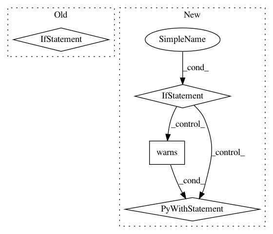

ffb300bd332ffc6a2a26455fcb0a1b13c0ea332d,nilearn/tests/test_init.py,,test_python_deprecation_warnings,#,33
Before Change
def test_python_deprecation_warnings():
with warnings.catch_warnings(record=True) as raised_warnings:
_python_deprecation_warnings()
if sys.version_info.major == 2:
assert_true(raised_warnings[0].category is DeprecationWarning)
assert_true(
str(raised_warnings[0].message).startswith(
"Python2 support is deprecated")
)
elif sys.version_info.major == 3 and sys.version_info.minor == 4:
assert_true(raised_warnings[0].category is DeprecationWarning)
assert_true(
str(raised_warnings[0].message).startswith(
"Python 3.4 support is deprecated")
)
else:
assert_true(len(raised_warnings) == 0)
def test_warnings_filter_scope():
Tests that warnings generated at Nilearn import in Python 2, 3.4 envs
do not change the warnings filter for subsequent warnings.
After Change
def test_python_deprecation_warnings():
if sys.version_info.major == 3 and sys.version_info.minor == 5:
with pytest.warns(FutureWarning,
match="Python 3.5 support is deprecated"
):
_python_deprecation_warnings()
def test_warnings_filter_scope():
Tests that warnings generated at Nilearn import in Python 3.5 envs
do not change the warnings filter for subsequent warnings.
In pattern: SUPERPATTERN
Frequency: 3
Non-data size: 4
Instances
Project Name: nilearn/nilearn
Commit Name: ffb300bd332ffc6a2a26455fcb0a1b13c0ea332d
Time: 2019-11-23
Author: kc.insight.pi@gmail.com
File Name: nilearn/tests/test_init.py
Class Name:
Method Name: test_python_deprecation_warnings
Project Name: has2k1/plotnine
Commit Name: 06f687f88cb20d4c83a2b433a4534ba157e1ae01
Time: 2017-04-24
Author: has2k1@gmail.com
File Name: plotnine/tests/test_stat_calculate_methods.py
Class Name:
Method Name: test_stat_bin
Project Name: tgsmith61591/pmdarima
Commit Name: 98cbe76f46d4bd8dc059be3145fc5f1aa9b21442
Time: 2018-12-28
Author: drotarcharles@yahoo.com
File Name: pmdarima/arima/tests/test_arima.py
Class Name:
Method Name: test_for_older_version